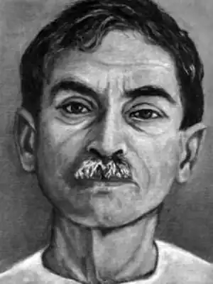
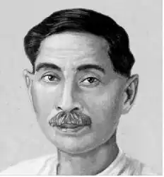

Дханпатрай Шривастав (31 липня 1880 Ламхі, поблизу Бенареса, — 8 жовтня 1936 Бенарес) — індійський письменник і публіцист (псевдонім Премчанд), який писав на мовах урду і хінді. Працював учителем і шкільним інспектором. Індійське національно-визвольний рух справила значний вплив на творчість Премчанда. Перша збірка оповідань "Любов до батьківщини" був опублікований в 1909 році. Але англійські колоніальні влади спалили це видання. Романи Премчанда "Обитель любові" (1922), "Арена" (1925), "Поле битви" (1932), "Жертовна корова" (1936), і збірники "Сім лотосів" (1917), "Ратна шлях" (1932) відбили політичні події, боротьбу за соціальні права і антиколоніальний рух в Індії. Премчанд виступав з критикою свавілля колоніальної і феодальної влади, звертав увагу на слабкості традиційної культури і згубність релігійного фанатизму. Наслідком громадянської позиції Премчанда стало політичне переслідування.
Перевагою творів Премчанда, який висвітлював політичні та соціальні проблеми, виступала глибока психологічна характеристика дійових осіб. Премчанд вважав народ основною рушійною силою суспільства і боровся за утвердження гуманістичних ідеалів. Він став основоположником критичного реалізму в літературах урду і хінді. Під його керівництвом видавалися журнали "Ханс" (1930-1936) і "Джагаран" (1932-1934). Публіцистична діяльність Премчанда зіграла значну роль в розвитку реалістичної і демократичної літератури в Індії.
Премчанд став одним із засновників Асоціації прогресивних письменників Індії (1936), що зробила значний вплив на індійську літературу.